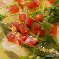

Herb Kitchen
イタリア料理とオリジナルレシピを紹介するサイトです。
オリジナルレシピ
タコのカルパッチョ
たこは低脂肪、低カロリーなだけでなく、コレステロールの上昇を抑える働きのあるタウリンが含まれます。
レモン果汁などさわやかな酸味、セロリやかいわれ菜などの香りのある野菜を上手に加えると、塩分を抑えてもおいしいおつまみになります。
たこのうまみを引き立てる、さわやかな青じそペーストはパスタやソテーのソースにも使えて便利な一品です。ニンニクや香草の香りが特長のソースは、素材の味をひき立てるビールや辛口の白ワインにピッタリ！スパークリングワインと合わせて、ちょっぴり気の効いた前菜としてもおすすめです。
- 紫玉ねぎは薄切りにし、水にさらしフキン等で良く水気を絞る。タコは2㎜位のそぎ切りにする。
- お皿に玉ねぎを敷き、タコをのせ、☆の混ぜたものをかけ、パセリをトッピングして完成です。
- 冷蔵庫で冷やして召し上がれ。
しらすのペペロンチーノ
 おうちでのランチはお手軽にすませたいですよね♪かつ、美味しければなおうれしい！今回は、ごはんの友のしらすを使った簡単パスタ、しらすのペペロンチーノをご紹介します。
おうちでのランチはお手軽にすませたいですよね♪かつ、美味しければなおうれしい！今回は、ごはんの友のしらすを使った簡単パスタ、しらすのペペロンチーノをご紹介します。
味付けはしらすの塩気とパスタの茹で汁を使います。ソースをあらかじめ作って茹で上がったパスタを絡めるので失敗知らずですよ。
ペペロンチーノは基本の素材がダイレクトに出ます。スパゲティ、オイル、塩、にんにく、唐辛子。全てが上質だと出来上がりも素晴らしく違いますよ。
用語説明
- 砂抜き
- アサリ、蛤、シジミなどの殻付き貝を調理する前に、中の砂をはかせること。
- イタリアンパセリ
- 日本でパセリ（オランダせり）と呼ばれているものに比べると葉が平たく、風味や香りが柔らかいのが特徴。